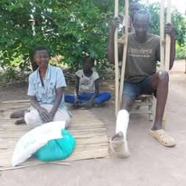
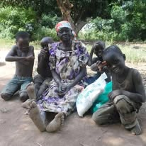
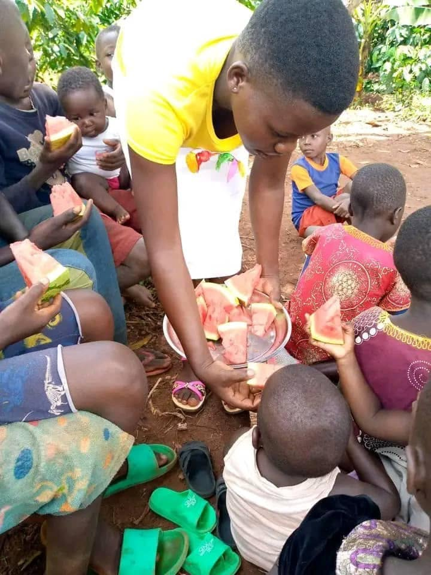
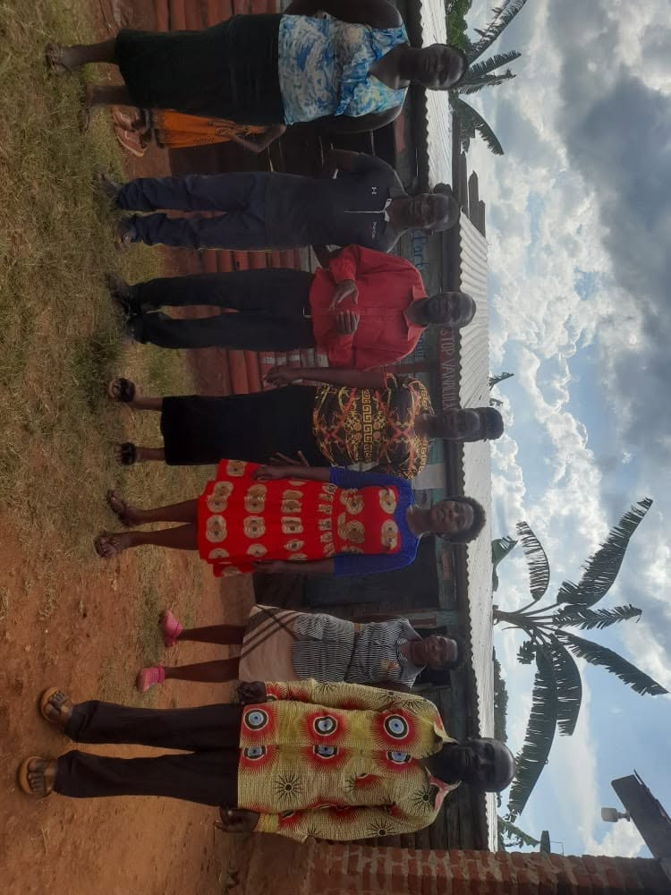
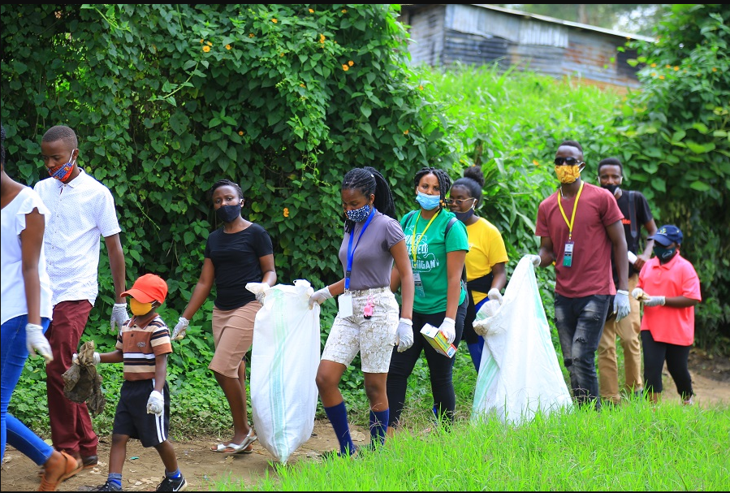
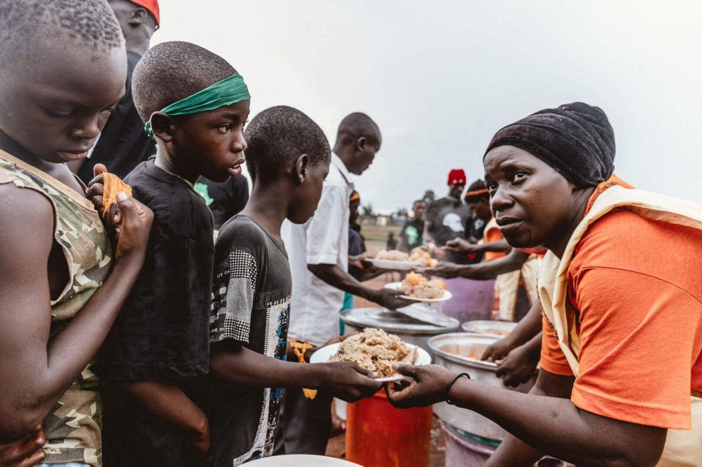

Family & Community Support
Standing alongside vulnerable families and encouraging stronger, caring communities through practical support, family visits and community participation.
Supporting Families, Strengthening Communities
Every child grows within a family and a community. When households face difficult circumstances, practical support and encouragement can help families work towards a more stable future.
All God's Children Foundation works within the Kamengo community to identify needs, engage with families and encourage community involvement in supporting children's wellbeing.







Our Areas of Focus
- Identifying household needs through family visits and engagement.
- Providing practical support to vulnerable families as resources allow.
- Encouraging children's wellbeing, education and development at home.
- Connecting with community members to understand local priorities.
- Mobilising volunteers to participate in appropriate community activities.
- Following up with families to understand ongoing needs and progress.
Working With Families and Communities
We believe families should be treated with dignity and respect. Listening to their experiences helps us understand their priorities and respond more thoughtfully. We also value cooperation with volunteers, community leaders and potential partners who share a commitment to children's wellbeing.
Our Commitment
We aim to provide support responsibly, based on identified needs and available resources. We respect the privacy and dignity of families and seek to ensure that community support is delivered thoughtfully and transparently.
Join Us in Supporting Families
If you are a volunteer, community group, organisation or supporter interested in strengthening families and communities, we welcome you to connect with us.
Contact Us